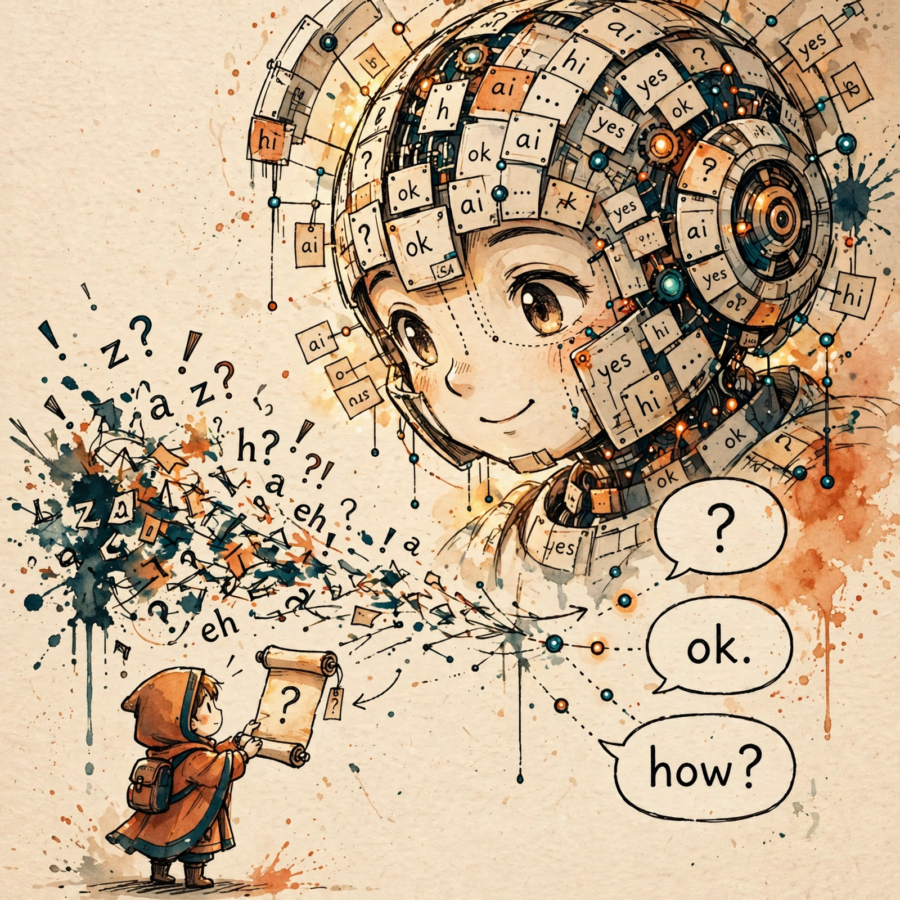

Supervised fine-tuning is the step that turns a next-token predictor into an instruction follower. The loss function barely changes from pretraining — the masking decision is the whole trick. This guide goes intuition → mechanism → math, with the failure modes interviewers actually probe.

A base (pretrained) model computes P(next token | previous tokens) over raw
internet text. It is a document-completer, not an assistant. Prompt it with
Q: write a haiku about GPUs / A: and it may emit three more questions —
because on the internet, a Q/A list continuing with more Q/A pairs is a perfectly
plausible continuation. The model has no notion of "you are being asked to do
something." SFT installs that notion.
One-line version: SFT converts P(next text) into P(response | instruction). Pretraining is raising a brilliant kid with no manners; SFT is the short, careful schooling.
Roles are wrapped in special tokens. The model only ever learns the exact token format it trained on. Train with template A, serve with template B → no error, no crash, just degraded answers. Weeks of work lost to a string-format mismatch.
apply_chat_template works and why mismatches bite.Standard causal-LM training: labels = input ids shifted left by one, cross-entropy over
all positions. For SFT we set every prompt (user/system) token's label to
−100, which is CrossEntropyLoss's
ignore_index — those positions contribute zero loss and zero
gradient.
Conversation: user, assistant, user, assistant. Every assistant turn gets loss; user and system turns get −100. An off-by-one in masking code trains on the wrong half of the conversation — silently, since the loss still decreases.
Masked cross-entropy, with Nresp = number of response tokens:
Same loss as pretraining, restricted to response tokens. Masking converts "predict the joint P(x₁…xT)" into behavior cloning: a product over turns of P(assistant_turn | conversation so far).
Subtlety interviewers love: the loss averages over response tokens only, so wildly varying response lengths change the effective gradient mix per batch. Watch token count, not example count, when reasoning about effective batch size. This is also why packing examples without attention boundaries leaks — the model learns spurious cross-example dependencies.
1–3 epochs, learning rate ~1–2e−5, often via LoRA/QLoRA. You are nudging settled weights, not rebuilding them. More epochs or a higher LR → catastrophic forgetting: the narrow SFT distribution overwrites broad pretraining knowledge.
The SFT model becomes πref in PPO. The KL penalty β·KL(π ‖ πref) anchors the RL policy to this model. A sloppy SFT — contaminated, style-overfit, template-broken — poisons everything downstream. SFT quality is RLHF quality.
Cover the answers. Say each one aloud until it's clean.
It models P(next text), not P(helpful response). On the internet, Q/A lists continuing with more questions are plausible continuations. No notion of instruction-following.
It's ignore_index in CrossEntropyLoss: those positions contribute zero loss and zero gradient.
All assistant turns get loss; user/system turns are −100. An off-by-one trains on the wrong half of the conversation — silently, since loss still decreases.
The model only knows the exact token format it trained on. No error, no crash — just degraded answers. Weeks wasted on a string mismatch.
Push back. SFT teaches behavior/format, not knowledge — quality dominates quantity (LIMA). 500k scraped examples risk contamination and style overfitting. 1–3 epochs, small LR.
Two failure modes. Over-refusal: refusal-heavy data mix taught "refuse when uncertain" — verify with a held-out over-refusal benchmark, compare refusal rates pre/post SFT. Verbosity: style overfitting (gotcha #8) — verify via length-distribution shift and length-controlled evals. Fix: rebalance with compliant near-boundary examples, length-diverse data, cap epochs/LR, length-penalized RLHF next.
The KL penalty β·KL(π ‖ π_ref) anchors the RL policy to the SFT model. Sloppy SFT poisons RLHF.
Loss averages over response tokens only, so the effective gradient mix skews toward long responses. Monitor token count, not example count, for effective batch size.
"SFT converts a next-token predictor into an instruction follower by fine-tuning on instruction–response pairs with loss computed only on the response tokens. The LIMA result — a thousand curated examples aligning a 65B model — shows SFT teaches format and behavior, not new knowledge."